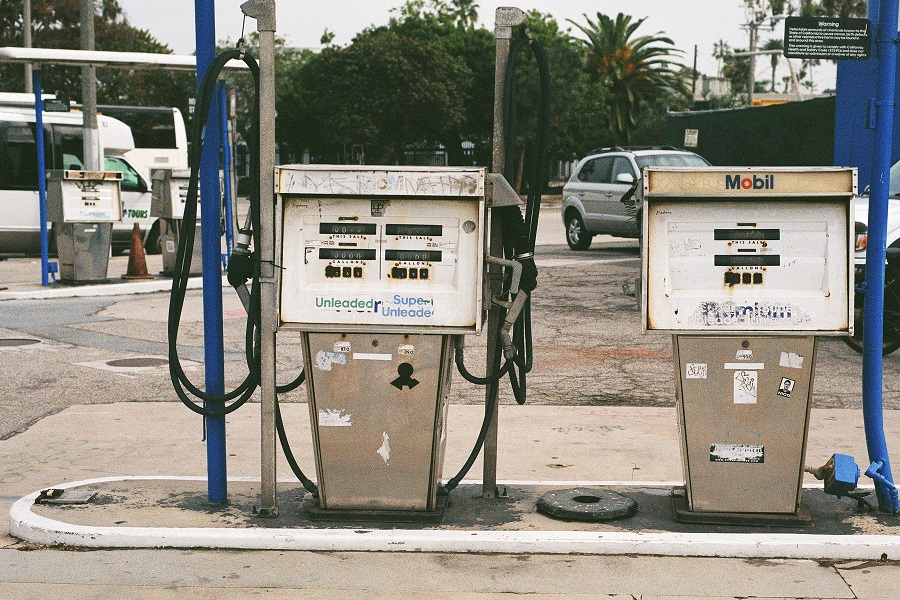

Clair Patterson
The man who proved that lead is poisonous

Unleaded gasoline at a gas station - he's the reason we have it
Photo by Randy Laybourne on Unsplash
Important parts of Clair Patterson's life:
- 1922 – Born in Mitchellville, Iowa.
- 1939 – Graduated high school at 16.
- 1943 – Graduated Grinnell College with a degree in chemistry.
- 1944 – Graduated University of Iowa with a M.A. in molecular spectroscopy.
- 1944 – Sent to work on the Manhattan Project at the University of Chicago and then at Oak Ridge, Tenessee using mass spectrometry.
- After WWII – Returned to Chicago to get his PhD. While there he discovered interesting discoveries with lead that he would study later in life.
- 1948 – Worked with George Tilton to try to figure out the age of the solar system by performing geological aging on Zircons. Tilton would measure uranium and Patterson would measure lead. Patterson discovered his samples were getting contaminated.
- 1952 – Cofounded the geochemistry program at the California Institute of Technology (Caltech) with his old research advisror Harrison Brown. Patterson created his own lab focusing on keeping out any contaminations in order to be able to continue his work with lead. That, combined with Caltech's new mass spectrometer greatly helped him finish his work.
- 1953 – Patterson finally had a workable sample to use and announced to the world that the age of the Earth was 4.550 billion years. Which up until that point had been thought to be 3.3 billion years.
- 1965 – Patterson wrote an article “Contaminated and Natural Lead Environments of Man” telling the pubilc of the unneccessarily high concentrations of lead in the blood streams of Americans and a large source was leaded gasoline.
- 1965- – The Ethyl Corporation was a main producer of the lead in gasoline tetraethyllead (TEL) and fought against Patterson's findings. Their main argument stemmed from the Kehoe Rule which had found leaded gasoline safe after TEL was used in a plant in 1924 where workers were becoming deathly ill from lead poisoning. Robert Kehoe became the advocate for TEL Kehoe and reasoned that: Because of this Kehoe Rule, to claim that something is dangerous, the burden of proof is on those proving it is dangerous. This is the opposite to the precautionary rule which assumes something is dangerous until it can be proved safe. This is why it took many years for Patterson to change the minds of the public that current leaded gasoline should not be used.
- 1986 – All standard cars in the United States now use unleaded gasoline.
- 1990's – By the late 1990's lead levels in the blood of Americans dropped 80%
- 1995 – Patterson's Death.
Check out more information on his Wikipedia entry